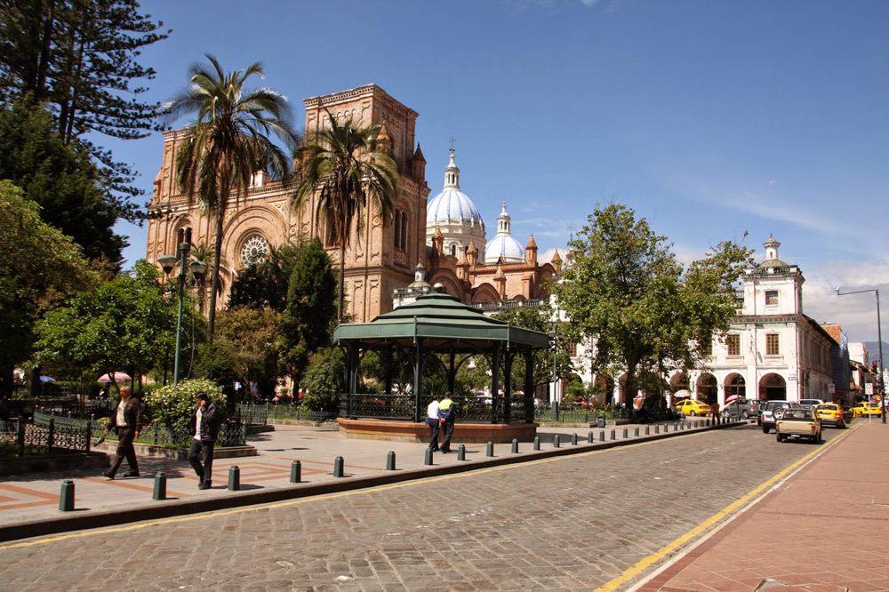

Datos del parque

Nombre
Nombrado asi en honor al joven héroe de la guerra de independencia
del Ecuador quien nació en Cuenca, el cual murió a la edad de 17 años
luego de recibir cuatro disparos. En este parque se encuentra un monumento
de este héroe.
El parque también es conocido como Plaza de Armas o
Plaza República.
Elementos
En el parque se encuentran ocho pinos, además de la estatua de Abdón
Calderón. Es un parque minimalista con la vegetación necesaria para dar
sombra y hacerlo un lugar relajante.
Alrededores
El parque está en el centro de la ciudad, por lo cuál es un sector adecuado
para orientarse, además de estar cerca de varios sitios de interés como
cafés, restaurantes, bancos, parques y otros.